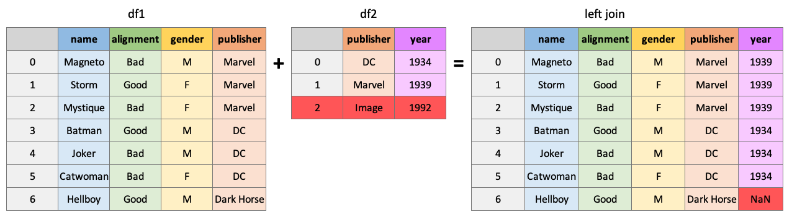

Working with Multiple DataFrames
Contents
Working with Multiple DataFrames¶
Often you’ll work with multiple dataframes that you want to stick together or merge. df.merge() and df.concat() are all you need to know for combining dataframes. The Pandas documentation is very helpful for these functions, but they are pretty easy to grasp.
Note
The example joins shown in this section are inspired by Chapter 15 of Jenny Bryan’s STAT 545 materials.
Sticking DataFrames Together with pd.concat()¶
You can use `pd.concat()` to stick dataframes together: - Vertically: if they have the same **columns**, OR - Horizontally: if they have the same **rows**
import pandas as pd
df1 = pd.DataFrame({'A': [1, 3, 5],
'B': [2, 4, 6]})
df2 = pd.DataFrame({'A': [7, 9, 11],
'B': [8, 10, 12]})
df1
| A | B | |
|---|---|---|
| 0 | 1 | 2 |
| 1 | 3 | 4 |
| 2 | 5 | 6 |
df2
| A | B | |
|---|---|---|
| 0 | 7 | 8 |
| 1 | 9 | 10 |
| 2 | 11 | 12 |
pd.concat((df1, df2), axis=0) # axis=0 specifies a vertical stick, i.e., on the columns
| A | B | |
|---|---|---|
| 0 | 1 | 2 |
| 1 | 3 | 4 |
| 2 | 5 | 6 |
| 0 | 7 | 8 |
| 1 | 9 | 10 |
| 2 | 11 | 12 |
Notice that the indexes were simply joined together? This may or may not be what you want. To reset the index, you can specify the argument ignore_index=True:
pd.concat((df1, df2), axis=0, ignore_index=True)
| A | B | |
|---|---|---|
| 0 | 1 | 2 |
| 1 | 3 | 4 |
| 2 | 5 | 6 |
| 3 | 7 | 8 |
| 4 | 9 | 10 |
| 5 | 11 | 12 |
Use axis=1 to stick together horizontally:
pd.concat((df1, df2), axis=1, ignore_index=True)
| 0 | 1 | 2 | 3 | |
|---|---|---|---|---|
| 0 | 1 | 2 | 7 | 8 |
| 1 | 3 | 4 | 9 | 10 |
| 2 | 5 | 6 | 11 | 12 |
You are not limited to just two dataframes, you can concatenate as many as you want:
pd.concat((df1, df2, df1, df2), axis=0, ignore_index=True)
| A | B | |
|---|---|---|
| 0 | 1 | 2 |
| 1 | 3 | 4 |
| 2 | 5 | 6 |
| 3 | 7 | 8 |
| 4 | 9 | 10 |
| 5 | 11 | 12 |
| 6 | 1 | 2 |
| 7 | 3 | 4 |
| 8 | 5 | 6 |
| 9 | 7 | 8 |
| 10 | 9 | 10 |
| 11 | 11 | 12 |
Joining DataFrames with pd.merge()¶
pd.merge() gives you the ability to “join” dataframes using different rules (just like with SQL if you’re familiar with it). You can use df.merge() to join dataframes based on shared key columns. Methods include:
“inner join”
“outer join”
“left join”
“right join”
See this great cheat sheet and these great animations for more insights.
df1 = pd.DataFrame({"name": ['Magneto', 'Storm', 'Mystique', 'Batman', 'Joker', 'Catwoman', 'Hellboy'],
'alignment': ['bad', 'good', 'bad', 'good', 'bad', 'bad', 'good'],
'gender': ['male', 'female', 'female', 'male', 'male', 'female', 'male'],
'publisher': ['Marvel', 'Marvel', 'Marvel', 'DC', 'DC', 'DC', 'Dark Horse Comics']})
df2 = pd.DataFrame({'publisher': ['DC', 'Marvel', 'Image'],
'year_founded': [1934, 1939, 1992]})
df1
| name | alignment | gender | publisher | |
|---|---|---|---|---|
| 0 | Magneto | bad | male | Marvel |
| 1 | Storm | good | female | Marvel |
| 2 | Mystique | bad | female | Marvel |
| 3 | Batman | good | male | DC |
| 4 | Joker | bad | male | DC |
| 5 | Catwoman | bad | female | DC |
| 6 | Hellboy | good | male | Dark Horse Comics |
An “inner” join will return all rows of df1 where matching values for “publisher” are found in df2:
pd.merge(df1, df2, how="inner", on="publisher")
| name | alignment | gender | publisher | year_founded | |
|---|---|---|---|---|---|
| 0 | Magneto | bad | male | Marvel | 1939 |
| 1 | Storm | good | female | Marvel | 1939 |
| 2 | Mystique | bad | female | Marvel | 1939 |
| 3 | Batman | good | male | DC | 1934 |
| 4 | Joker | bad | male | DC | 1934 |
| 5 | Catwoman | bad | female | DC | 1934 |

An “outer” join will return all rows of df1 and df2, placing NaNs where information is unavailable:
pd.merge(df1, df2, how="outer", on="publisher")
| name | alignment | gender | publisher | year_founded | |
|---|---|---|---|---|---|
| 0 | Magneto | bad | male | Marvel | 1939.0 |
| 1 | Storm | good | female | Marvel | 1939.0 |
| 2 | Mystique | bad | female | Marvel | 1939.0 |
| 3 | Batman | good | male | DC | 1934.0 |
| 4 | Joker | bad | male | DC | 1934.0 |
| 5 | Catwoman | bad | female | DC | 1934.0 |
| 6 | Hellboy | good | male | Dark Horse Comics | NaN |
| 7 | NaN | NaN | NaN | Image | 1992.0 |
Return all rows from df1 and all columns of df1 and df2, populated where matches occur:
pd.merge(df1, df2, how="left", on="publisher")
| name | alignment | gender | publisher | year_founded | |
|---|---|---|---|---|---|
| 0 | Magneto | bad | male | Marvel | 1939.0 |
| 1 | Storm | good | female | Marvel | 1939.0 |
| 2 | Mystique | bad | female | Marvel | 1939.0 |
| 3 | Batman | good | male | DC | 1934.0 |
| 4 | Joker | bad | male | DC | 1934.0 |
| 5 | Catwoman | bad | female | DC | 1934.0 |
| 6 | Hellboy | good | male | Dark Horse Comics | NaN |

pd.merge(df1, df2, how="right", on="publisher")
| name | alignment | gender | publisher | year_founded | |
|---|---|---|---|---|---|
| 0 | Batman | good | male | DC | 1934 |
| 1 | Joker | bad | male | DC | 1934 |
| 2 | Catwoman | bad | female | DC | 1934 |
| 3 | Magneto | bad | male | Marvel | 1939 |
| 4 | Storm | good | female | Marvel | 1939 |
| 5 | Mystique | bad | female | Marvel | 1939 |
| 6 | NaN | NaN | NaN | Image | 1992 |
There are many ways to specify the key to join dataframes on, you can join on index values, different, column names, etc. Another helpful argument is the indicator argument which will add a column to the result telling you where matches were found in the dataframes:
pd.merge(df1, df2, how="outer", on="publisher", indicator=True)
| name | alignment | gender | publisher | year_founded | _merge | |
|---|---|---|---|---|---|---|
| 0 | Magneto | bad | male | Marvel | 1939.0 | both |
| 1 | Storm | good | female | Marvel | 1939.0 | both |
| 2 | Mystique | bad | female | Marvel | 1939.0 | both |
| 3 | Batman | good | male | DC | 1934.0 | both |
| 4 | Joker | bad | male | DC | 1934.0 | both |
| 5 | Catwoman | bad | female | DC | 1934.0 | both |
| 6 | Hellboy | good | male | Dark Horse Comics | NaN | left_only |
| 7 | NaN | NaN | NaN | Image | 1992.0 | right_only |
By the way, you can use pd.concat() to do a simple “inner” or “outer” join on multiple datadrames at once. It’s less flexible than merge, but can be useful sometimes.